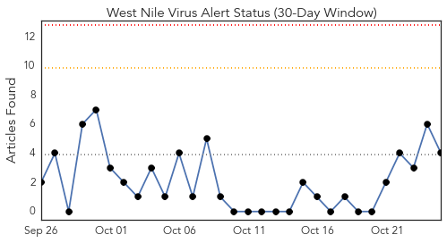
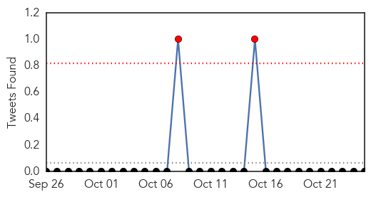
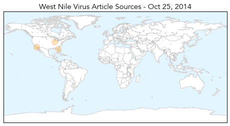
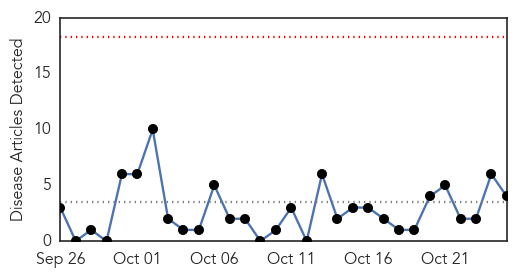
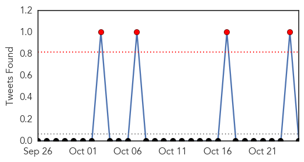
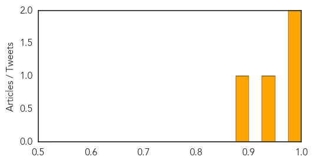

West Nile Virus
30-Day Web Trend
0 alerts, 0 warnings

30-Day Twitter Trend
2 alerts, 0 warnings

Article Locations
Article Confidences
Top Articles:
- 0.991
- La Mesa man 1st West Nile virus death in San Diego County in seven years
- 0.886
- San Diego County records its first West Nile virus death since 2007
- 0.880
- Florida West Nile virus: Volusia County reports 4th case, Marion County sees first
- 0.874
- Birds Roosting in Large Groups May Be Less Likely to Contract West Nile Virus
Top Tweets:
-
No tweets found for Oct 25, 2014
MERS
30-Day Web Trend
0 alerts, 0 warnings

30-Day Twitter Trend
2 alerts, 0 warnings

Article Locations

Article Confidences
Top Articles:
Top Tweets:
-
No tweets found for Oct 25, 2014